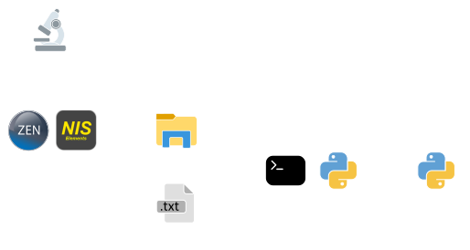
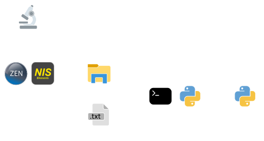

How DySTrack works#
DySTrack’s architecture#
Broadly speaking, DyStrack consists of the following components:
The DySTrack manager (API): A python command line application that checks for new images produced by the microscope, triggers an image analysis pipeline in response, and feeds the resulting coordinates back to the microscope.
Image analysis pipelines (API): Python image analysis pipelines that receive a target path from the manager, load and analyze the image, and return new coordinates for the next acquisition.
Microscope macros: Automation tools running within the microscope software to control the microscope’s operation, including awaiting new coordinates from the DySTrack manager, parsing the new coordinates, and triggering stage movement. DySTrack currently comes with macros for
ZEN Black,ZEN Blue, andNIS Elements, but is not inherently limited to these systems.
The basic way these components interact can be summarized as follows:
 

{kind=link}
During a DySTrack experiment, standard microscope software is used to control the acquisition of images, which are then saved to a folder monitored by the DySTrack manager (running in the command line). Upon detecting a target image, DySTrack triggers an image analysis pipeline that reads the images, processes it, and returns new coordinates for the next acquisition.
The DySTrack manager then passes these coordinates to the microscope, usually simply by writing them to a text file. The macro or automation pipeline running within the microscope control software awaits the new coordinates, parses them, and triggers stage movement and subsequent acquisitions.
Standard acquisition process#
Although this is not strictly required, current applications of DySTrack use two different acquisition settings:
The prescan: This is a low-resolution, low-quality (e.g. low laser power and high gain), very fast acquisition that is fed into DySTrack to compute new coordinates. Those new coordinates are then immediately used for the main scan.
The main scan: This is usually a high-resolution, hiqh-quality, slower acquisition that constitutes the actual data of interest for the experiment. It is acquired at the coordinates determined by the prescan, and is itself not fed to DySTrack.
DySTrack readily supports multi-positioning to capture several samples in one experiment. To this end, the microscope macro is configured to trigger the next prescan at the next position, followed by the main scan, followed by the next prescan at the next position, and so on.
A standard DyStrack experiment thus proceeds as follows:


Running a DySTrack experiment#
The following is a brief overview of the steps that are typically involved in running a DySTrack experiment. For more details on how to execute each step on different microscopes, see the relevant pages in the Usage section.
Confirm that DySTrack has been installed and tested (see Installation)
Make a new target directory where the data for the experiment will be saved
Start the DySTrack manager in the command line
Activate the environment in which DySTrack is installed
Locate the config file (in the
runfolder) for your experimentStart the DyStrack manager as follows:
python <path-to-config-file.py> <path-to-target-dir> [optional arguments]
Configure the microscope software and macro
Configure and save suitable acquisition settings for prescan and main scan
Set the initial position(s) for your sample(s)
Start the relevant macro editor / automation tool suite
Select your acquisition settings and target directory
Double-check that everything is ready to go
Start the macro/workflow in the microscope software
Monitor the microscope for the first few time points to ensure everything is running as intended
Tip: It can be useful to configure remote access to the microscope PC to check back at later points if necessary.
After the experiment
The DySTrack manager can be stopped by pressing
Escin the command lineThe microscope software and hardware should be shut down as usual
The main scan images/stacks for each position and time point are saved as separate files